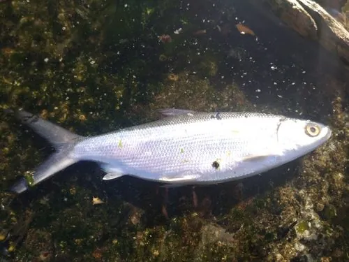

鱼类 · 动物界
虱目鱼 Chanos chanos

印度洋—太平洋的暖水鱼类，体呈纺锤形、尾鳍深叉，以浮游生物为食，是台湾和东南亚重要的养殖鱼种。
- 分类
- 门脊索动物门纲辐鳍鱼纲目鼠鱚目科虱目鱼科属虱目鱼属
- 栖息环境
- 热带和亚热带近岸、河口和珊瑚礁潟湖
- 地理分布
- 印度洋—太平洋热带海域，中国南海和台湾周边有分布
- 保护级别
- IUCN 无危（LC）；中国未列入国家重点保护野生动物名录
物种志
虱目鱼体呈纺锤形，侧扁，头小，口小，尾鳍深叉。体色背部青灰或蓝绿，腹部银白，体侧有一条不明显的纵带，鳞片细小。成鱼体长一般 50–100 cm，最大可达 1.5 m，体重可达 10 kg 以上。
虱目鱼分布于印度洋—太平洋的热带和亚热带海域，从东非、东南亚到日本南部、澳大利亚，中国南海和台湾周边有分布。它栖息在近岸、河口和珊瑚礁潟湖，以浮游生物和有机碎屑为食，常成群活动。虱目鱼是台湾和东南亚重要的养殖鱼类，养殖历史已有数百年，鱼苗捕捞和池塘养殖都很普遍。它肉质细嫩，可煎、煮、做鱼丸。由于分布广、养殖量大，IUCN 评估为无危。
形态与习性
- 食性浮游生物和有机碎屑
- 体长一般 50–100 cm，最大可达 1.5 m
- 体重最大可达 10 kg 以上
- 养殖台湾和东南亚重要养殖鱼，历史数百年
- 习性常成群活动，栖息于近岸和潟湖
- 食用肉质细嫩，可煎、煮或做鱼丸
趣味知识
- 虱目鱼是台湾养殖历史最悠久的鱼类之一。
- 它几乎没有牙齿，靠鳃耙滤食浮游生物和有机碎屑。
- 虱目鱼全身只有一根主刺，适合做成鱼丸和鱼肚。